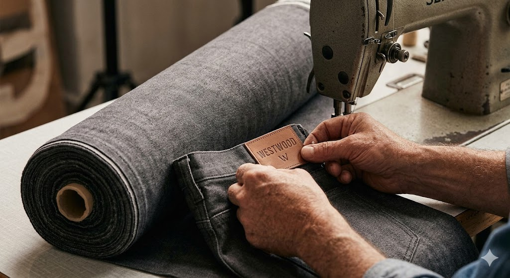
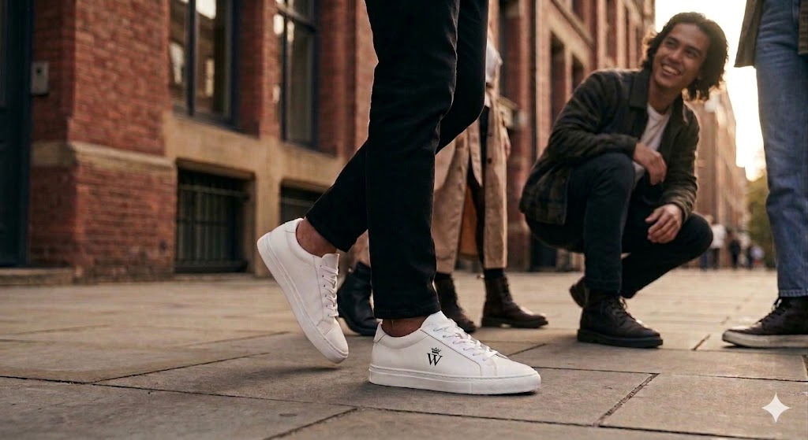

Paixão e Matéria-Prima
A WESTWOOD nasceu do desejo de criar algo duradouro em um mundo cada vez mais efêmero. Não começamos em grandes fábricas, mas em um pequeno ateliê, onde cada detalhe ganhava vida entre o aroma do couro legítimo e a textura marcante do denim premium.
Foi nesse ambiente que nossa identidade foi moldada: com calma, precisão e propósito. Nossa essência é artesanal. Valorizamos o processo tanto quanto o resultado, acreditando que cada peça deve carregar consigo uma história única de dedicação, cuidado e atenção aos detalhes.
O patch de couro aplicado à mão vai além de um simples logo. Ele representa nosso compromisso com a autenticidade e a qualidade. É um símbolo que você não apenas vê, mas sente ao tocar.

Artesanal e Preciso
A WESTWOOD valoriza o processo artesanal como um dos pilares fundamentais da sua criação. A verdadeira qualidade nasce do cuidado em cada etapa da construção de uma peça.
Cada criação une técnicas tradicionais com um olhar moderno, garantindo precisão, acabamento refinado e uma identidade forte. O uso de materiais como denim e couro premium reforça essa essência única.
Mais do que fabricar produtos, buscamos preservar um método de criação que respeita o tempo necessário para fazer bem feito. Cada detalhe importa. Cada escolha carrega intenção.

Projetado para a Cidade
O verdadeiro luxo está na simplicidade
Linhas limpas, equilíbrio e ausência de excessos não são apenas escolhas estéticas são decisões que definem nossa identidade.
Nosso tênis foi criado para acompanhar o ritmo da cidade. Confortável, resistente e versátil, ele se adapta a diferentes momentos do dia sem perder sua essência. Ele transita entre o casual e o sofisticado com naturalidade.
A WESTWOOD vai além do produto. Somos movidos por pessoas, histórias e pela energia urbana. Cada peça acompanha essa jornada real, dinâmica e autêntica.
Evolução Contínua
Hoje, a WESTWOOD representa crescimento e evolução sem abrir mão da sua essência. A marca mantém o equilíbrio entre estrutura e criatividade, expandindo suas possibilidades sem perder sua identidade original.
Cada detalhe reflete um sistema mais sólido, mais maduro, mas ainda profundamente conectado às suas origens artesanais. A evolução não apaga o passado ela o fortalece.
O futuro é construído com a mesma paixão, propósito e autenticidade que deram início a tudo. Seguimos criando, inovando e aperfeiçoando, sempre com o mesmo compromisso: fazer bem feito.